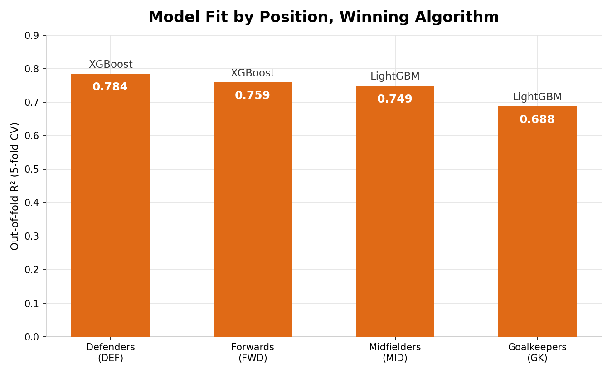
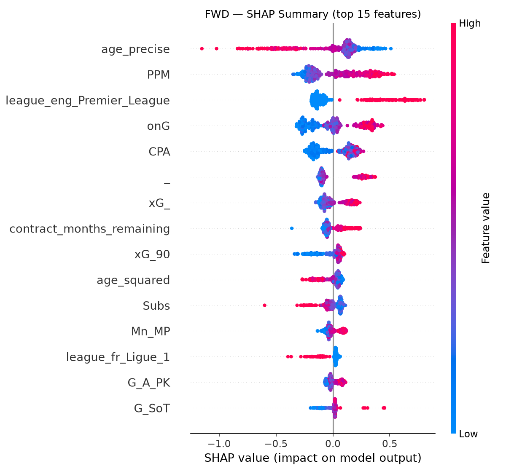
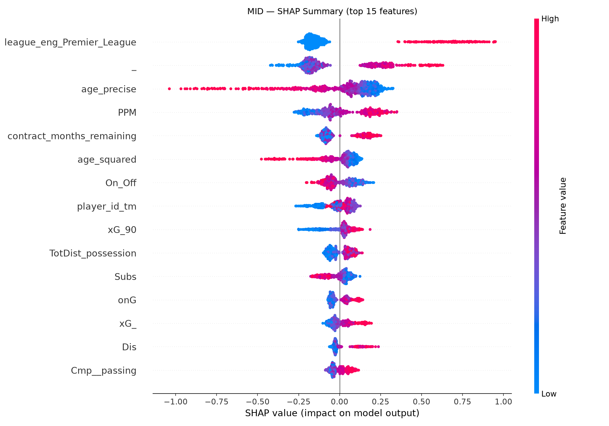
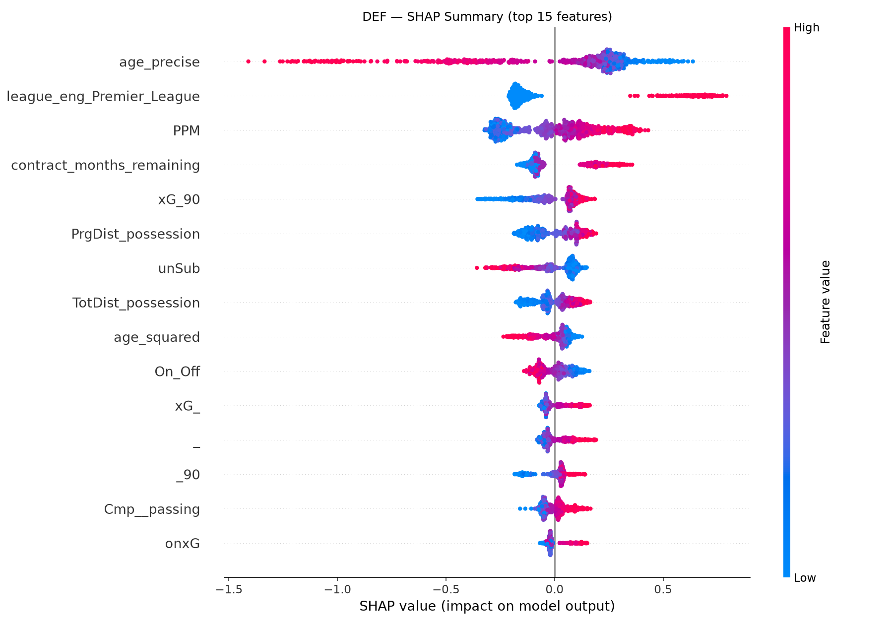
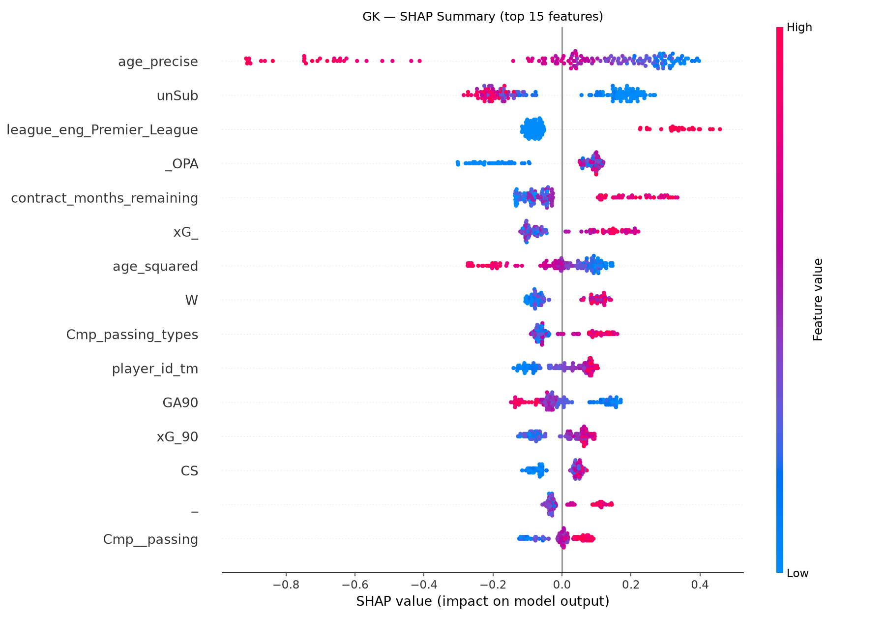
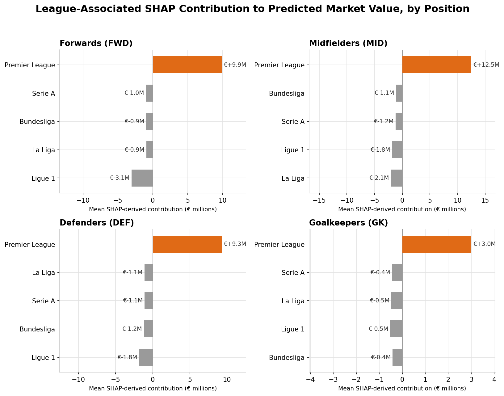
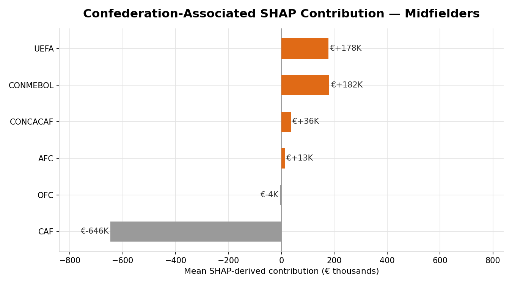
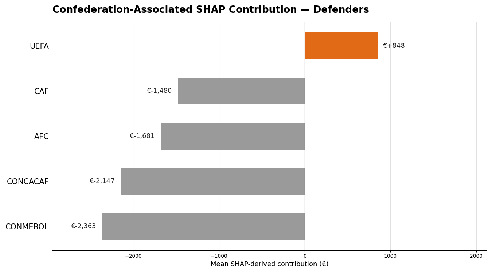
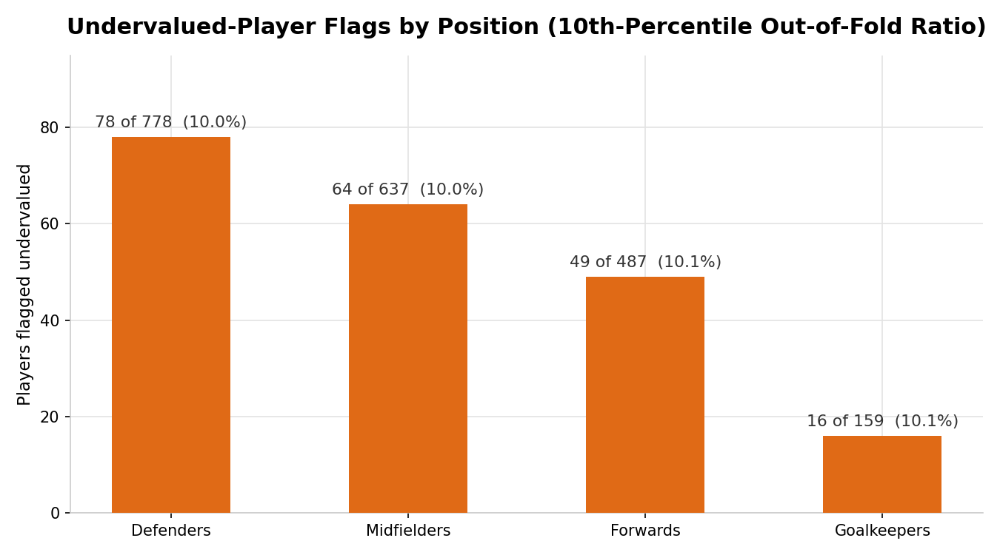

Case Study · MSc Dissertation
Performance vs Prestige: A Machine Learning Study of Bias in Football Player Valuations
Transfer fees regularly run into the hundreds of millions, but how a player's price actually gets set is mostly a black box. Transfermarkt and sites like it have become the default reference for market value, and that number comes out of a moderated, crowd-sourced consensus, not a transparent accounting of performance. Separately, sports economics research has shown that factors with nothing to do with performance (media coverage, reputational visibility, nationality) measurably move valuations too. Neither strand actually splits one player's number into the part earned by performance and the part that comes from context. That's what this dissertation tries to do: four position-specific machine learning models trained on 2024–25 season data, with SHAP used not just to explain the models but to put an actual euro figure on what a player's league and confederation are doing to their estimated price once performance is already accounted for.
The dataset covers 2,061 players across Europe's Big 5 leagues (Premier League, La Liga, Bundesliga, Serie A, Ligue 1) for 2024–25, built by matching FBRef performance stats to Transfermarkt valuations through a four-stage name-matching process. Four algorithms (Ridge, Random Forest, XGBoost, LightGBM) were compared per position under 5-fold cross-validation, and whichever model won for a given position got handed to SHAP, which breaks every individual prediction down feature by feature, including the league and confederation dummies.
Can performance alone explain a player's price?
Mostly, yes, with real variation by position. The winning model reaches an out-of-fold R² of 0.7843 for Defenders, 0.7589 for Forwards, 0.7490 for Midfielders, and 0.6875 for Goalkeepers. Defenders fit best, which tracks with how well a stable set of counting stats (tackles, interceptions, blocks) captures defensive contribution. Goalkeepers fit worst, which reads as the available features only partly reaching what actually prices a goalkeeper. Ridge Regression, a plain linear model, stays within 0.02–0.03 R² of the winning tree ensemble in every position, which suggests most of the exploitable signal here is close to linear in log-space, with XGBoost and LightGBM picking up a fairly small non-linear remainder. None of this says performance predicts value on its own, though: league and confederation are direct model inputs here too, not held out, so this R² is performance and context together. Separating the two is exactly what the next two sections do.

What the model actually weighs
For Forwards, age and per-90 output (non-penalty expected goals, shots, touches in the box) dominate the SHAP summary, as you'd expect. But the Premier League dummy sits in the top three features by mean impact, with a spread almost as wide as the output stats around it: a cluster of strongly negative points (players not in the Premier League) and a separate cluster pushed firmly positive. The same pattern repeats for Midfielders, Defenders and Goalkeepers in their own SHAP summaries, with league features ranking right alongside the position's own output stats. Age, playing time and position-specific output (progressive passes for midfielders, tackles and interceptions for defenders, save percentage for goalkeepers) are consistently the biggest contributors overall. League affiliation is consistently among them too, not some minor adjustment at the margins.




Premier League affiliation is worth millions, in every position
This is the central result. Summed across every league feature, Premier League affiliation carries the largest positive SHAP contribution in all four positions, and every other league carries a negative one. For outfield players it isn't close: +€9.9M for Forwards, +€12.5M for Midfielders, +€9.3M for Defenders, against discounts of €0.9M–€3.1M for the other four leagues. Goalkeepers show the same direction at a smaller scale (+€3.0M), consistent with that position's weaker overall model fit. The direction held across a cutoff-sensitivity check run during development, and it's the most robust finding across every version of this pipeline. To be precise about what this number actually is: it's the model's attributed contribution of league-membership features to a prediction, conditional on the performance and other characteristics already in the model. It's an association, not a claim about any causal effect of playing in the Premier League.
That caveat matters because the model has no club-level financial features at all: no revenue, no wage bill, no European-competition participation. So the league dummy is the only channel through which prestige, club wealth, genuine competitive intensity, or some mix of the three, can show up. It also lines up with real financial numbers: Deloitte's Football Money League puts 9 of the world's 20 highest-revenue clubs in the Premier League (against 1 in Ligue 1), with aggregate Premier League club revenue at £6.8 billion for 2024–25. The finding is best read as a league-affiliation effect, not a league-prestige effect specifically. The two aren't separable with the features available here.

Confederation barely moves the needle, except for midfielders
Confederation effects are one to two orders of magnitude smaller than league effects for Defenders and Midfielders, and exactly zero for Forwards and Goalkeepers. That's a genuine, mathematically grounded property of those two trained models, not a rounding artefact: their final tree ensembles never once pick a confederation feature as a split point. Midfielders show the largest and most structured confederation pattern of the four, with CAF (Africa) carrying a notably negative mean contribution (−€646K) against small positive contributions for UEFA, CONMEBOL, CONCACAF and AFC. Several of these subgroups are small (AFC n=12, CONCACAF n=13, OFC n=1 for midfielders), so this is better read as a real but statistically fragile pattern than an established structural finding.


Who the model says is underpriced
Each player's out-of-fold predicted value gets compared to their actual Transfermarkt valuation, and anyone in the top 10% of that ratio, within their own position, gets flagged "undervalued." Using the out-of-fold ratio rather than the final model's in-sample prediction keeps the flag from being contaminated by in-sample optimism. 207 of 2,061 players (10.0%) are flagged across the four positions: 78 of 778 Defenders, 64 of 637 Midfielders, 49 of 487 Forwards, 16 of 159 Goalkeepers. The flag and a player's individually displayed "Model Estimated Value" (the final model's own in-sample prediction) are computed differently, so they won't always move in lockstep for the same player. Both numbers are genuine; they just answer slightly different questions.

What this means
For a scouting or recruitment use case, the practical read is this: the model's "Model Estimated Value" is a peer-comparison estimate, what players with similar observed characteristics and performance received in this market, not a forecast or a "fair value" judgement. The undervalued flag is a starting shortlist, not a verdict. The Premier League finding is the one worth taking most seriously, since it's the most robust result in the whole project, but it should inform how a valuation gap gets interpreted rather than get read as proof of any single mechanism behind it. Prestige, club wealth, and visibility all plausibly contribute, and this design can't cleanly separate them.
Limits
The biggest limitation of the whole design is that the feature matrix has no club-level financial or competitive features: no revenue, no wage bill, no European-competition participation. So the league dummy is the only channel through which prestige, club wealth, and genuine competitive intensity can show up, and SHAP can't separate the three after the fact. The target variable itself is a crowd-sourced Transfermarkt valuation, not a realised transfer fee, and prior research has found that this crowd-sourced process gives less attention to less-visible leagues. So what's measured here is bias as it shows up on that valuation platform, not necessarily bias in prices clubs actually pay. The feature-ablation comparison (full position-specific models vs. a reduced-feature, pooled-position model, R²=0.5249–0.5514) changes two things at once, the feature set and the population, so the resulting gap can't be cleanly pinned on the lost features alone. There's no direct popularity or media-exposure measure, so any real visibility effect can only surface indirectly through league affiliation. The final 2,061-player sample reflects several compounding, non-random selection choices (a 270-minute playing-time threshold, a 95.5% FBref-Transfermarkt match rate, 93.1% valuation coverage) stacked on top of each other. SHAP values are an exact breakdown of what a specific trained model learned, not a direct measurement of anything in the real world, so every finding here is a statistical association, not a demonstrated causal effect. This is also a single-season, cross-sectional design (2024–25 only), so it can't say whether these effects hold stable over time, and several confederation-position subgroups are small enough (OFC, some CONCACAF and goalkeeper groups under 20 players) that their SHAP contributions should be read as indicative, not conclusive. None of this, alone or together, undermines the central finding: the Premier League-associated contribution held across every position and every cutoff tested during development. But together they're reason enough for caution about how far any single number here should get stretched beyond this dataset, season, and valuation platform.